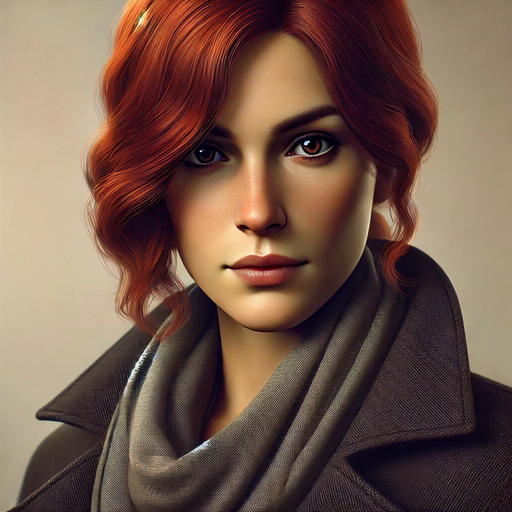

Herr Weber
Beruf: Journalist
Merkmale: Groß (1,85m), schwarze Lederjacke
Verdächtig, weil: Er hat in der Bücherei recherchiert und war zur Tatzeit vor Ort.
Frau Lehmann
Beruf: Lehrerin
Merkmale: Blonde Haare, Brillenträgerin
Verdächtig, weil: Sie hat das gestohlene Buch in ihrem Unterricht erwähnt und kennt sich damit gut aus.

Herr Wagner
Beruf: Buchhändler
Merkmale: Trägt immer einen Hut, hat einen Bart
Verdächtig, weil: Er wollte das Buch für seinen Laden haben und war auffällig nervös, als man ihn darauf ansprach.

Frau Berger
Beruf: Künstlerin
Merkmale: Rote Haare, dunkler Mantel
Verdächtig, weil: Sie hat Illustrationen für ein ähnliches Buch angefertigt und zeigte großes Interesse an dem verschwundenen Exemplar.